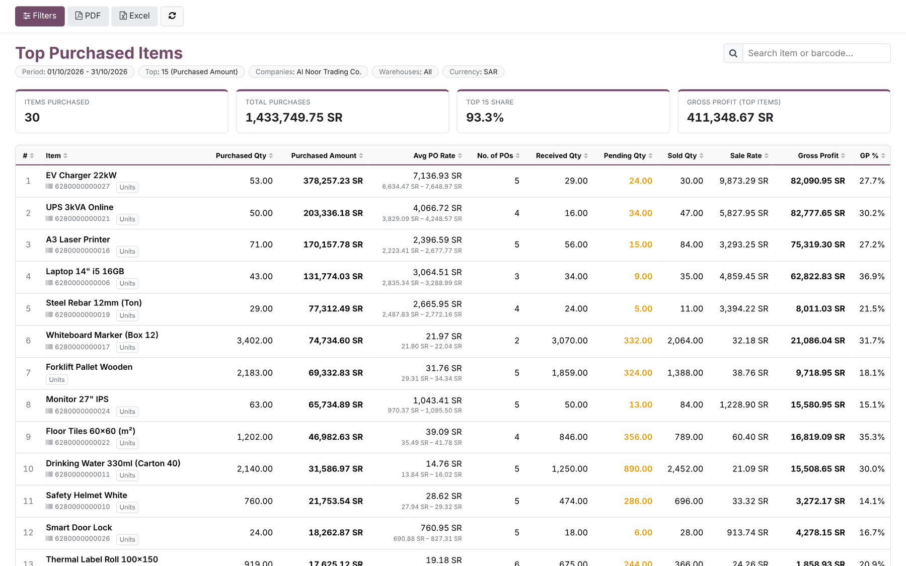
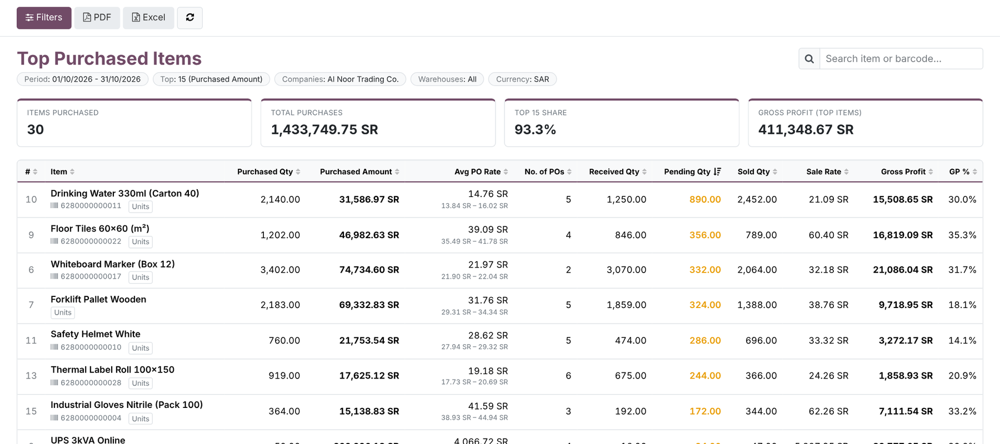
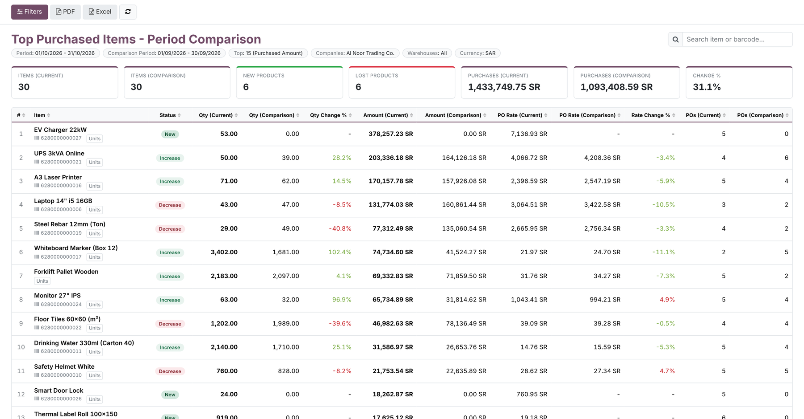
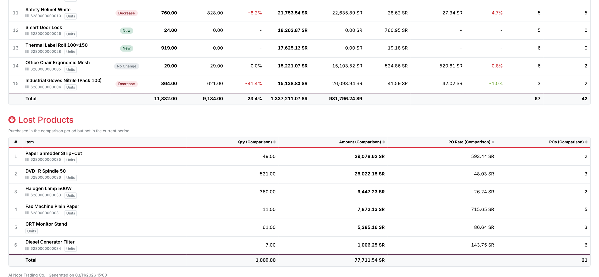
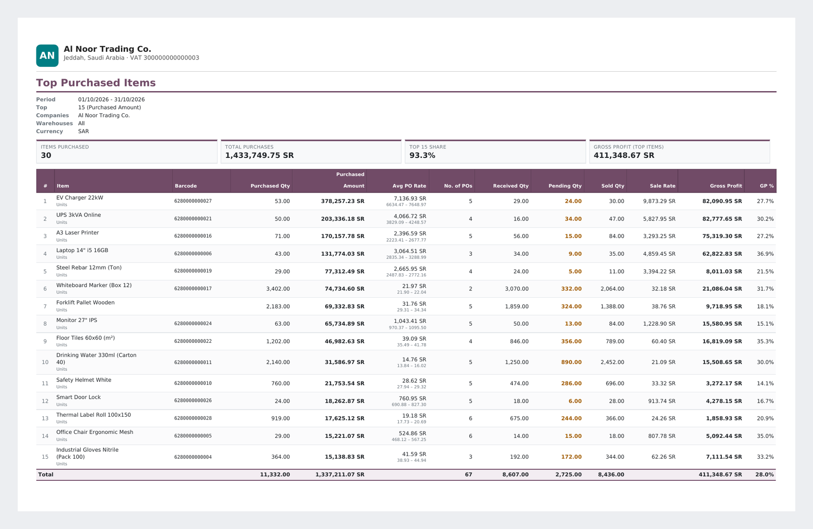
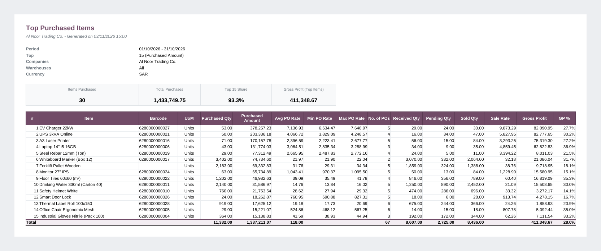
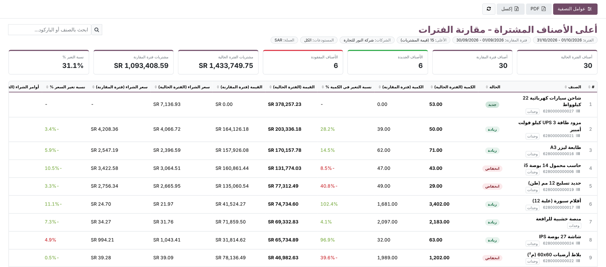
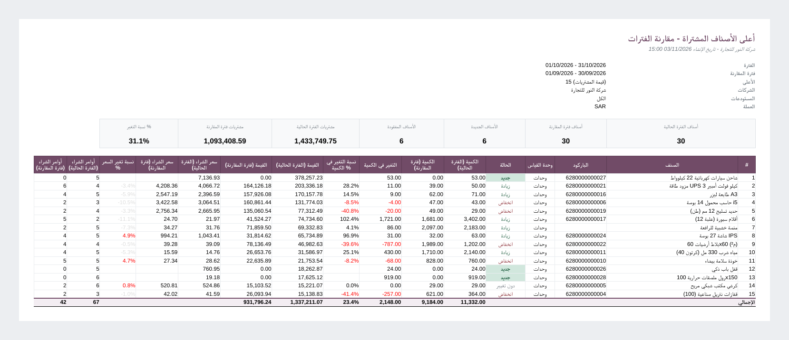

Purchase · Reporting · Analytics
Top Purchased Items Report
See the items you spend the most on, valued at the prices you actually paid on each purchase order, next to what was received, what is still pending, what was sold and the gross profit. Compare two periods to spot new and lost products at a glance.
Odoo 16.0
Community & Enterprise
Web · PDF · Excel
Arabic (RTL)
19 automated tests
Technical name: po_top_items_report
2 report modes
Basic Top N, or a period comparison with new and lost products
3 outputs
Interactive web view, QWeb PDF and formatted Excel from the same data
< 1 s
A 12-month Top 20 over 1.1 million purchase order lines
0 cost guessing
Amounts use actual PO line prices, never the product cost
Why this module
Purchase Analysis tells you what was bought. Buyers and managers also need to know what it earned, what is still missing and what changed since last month, in one list they can print or send.
In standard Odoo 16
- Purchase Analysis is a pivot: getting a Top N list means sorting and trimming it by hand.
- Purchase figures and sales, sale price and gross profit live in separate reports.
- Computing ordered − received over a product nets an over-receipt on one PO against a shortage on another.
- The pivot comparison shows two columns but does not flag new or lost products.
- One average price hides price variations between purchase orders.
- The pivot export is a raw grid: no KPIs, totals layout or Arabic right-to-left report.
With this module
- Pick Number of Items (1–1000) and Rank By amount, quantity or number of POs.
- Sold Qty, Sale Rate, Gross Profit and GP % sit on the same row as the purchases.
- Pending Qty is computed per PO line, so every shortage stays visible.
- Status badges New, Increase, Decrease, No Change and a separate Lost Products table.
- Avg PO Rate with the min – max range paid across the period’s purchase orders.
- Branded PDF and Excel with KPIs and totals, fully translated and mirrored in Arabic.
How it works
One wizard, one data engine, three outputs.
1
Open
Purchase › Reporting › Top Purchased Items.
2
Filter
Choose Basic or Comparison, the period, Top N, ranking, companies, warehouses and categories.
3
Explore
Sort any column, search by item or barcode, click a figure to open the purchase or invoice lines behind it.
4
Share
Print the PDF or export Excel with one click, in the user’s language.
Features
Screenshots use demo data: a Jeddah trading company in SAR with 36 products, purchases in September and October 2026 (some from a USD vendor and some in Dozens), partial receipts, customer invoices and a credit note.
Menu & filters
Everything is set in one wizard
Open Purchase › Reporting › Top Purchased Items. Choose Report Type (Basic or Comparison), the Period, and in comparison mode Compare With Previous Period, Same Period Last Year or Custom dates. Set Number of Items and Rank By (Purchased Amount, Purchased Quantity or Number of POs), then narrow by Companies, Warehouses and Product Categories (sub-categories included). View Report, PDF and Excel are in the footer. The standard purchase reports are not changed.

Feature 1
Your top items, at the prices you really paid
Each row shows Item, Barcode, Purchased Qty, Purchased Amount, Avg PO Rate with its min – max range, No. of POs, Received Qty, Pending Qty, Sold Qty, Sale Rate, Gross Profit and GP %. KPI cards above the table show Items Purchased, Total Purchases, the Top N share of all purchases and the Gross Profit of the listed items.

How the figures are computed. Purchased Amount = sum of each confirmed PO line’s subtotal (after discount, before tax) ÷ the currency rate stored on that PO. Sale Rate = revenue of posted customer invoices minus credit notes ÷ Sold Qty. Gross Profit = revenue − Sold Qty × Avg PO Rate.
Example: 30 EV chargers sold for 296,198.82 SR, bought at an average of 7,136.93 SR: 296,198.82 − 30 × 7,136.93 ≈ 82,090.92 SR (the report shows 82,090.95 SR because it keeps the average rate at full precision).
Feature 2
Sort, search and drill down
Click any column header to sort; a third click returns to the report ranking. Here the list is sorted by Pending Qty to see what still has to be received. Type in the search box to filter by item name or barcode; the totals row follows the visible rows. Click Purchased Amount, No. of POs or Sold Qty to open the purchase order lines or customer invoice lines behind the number.

Feature 3
Compare two periods: new, up, down
The Comparison report ranks the current period’s top items and puts the comparison period next to it: Qty, Amount, PO Rate and POs for both periods, Qty Change % and Rate Change %. A Status badge marks each item New, Increase, Decrease or No Change. Price rises are shown in red, because paying more is bad news for purchasing. KPI cards count items in both periods, New Products, Lost Products and the change in total purchases.

Feature 4
Lost products are listed, not forgotten
Items bought in the comparison period but not in the current one appear in their own Lost Products table, with the quantity, amount, PO rate and number of POs of the comparison period. Useful to catch a supplier switch, a discontinued line or a reorder that was missed.

Feature 5
Printable PDF in A4 landscape
The PDF button prints the same report with your company layout: filters, KPI cards, the full table with totals and, in comparison mode, the lost products. Pending quantities are highlighted and negative profits shown in red. In Arabic the report is right-to-left.

Feature 6
Excel ready to work with
The Excel button downloads an .xlsx with the filters, KPI cards, frozen header row and auto-filter. Totals use SUBTOTAL formulas, so they follow the rows you filter in Excel, and every number keeps a number format. Comparison exports add a Lost Products sheet.

Feature 7
Fully in Arabic, right-to-left
All labels, statuses, KPI names, messages and the wizard are translated (ar_001). In Arabic the web view, the PDF and the Excel sheets are mirrored right-to-left.


Comparison statuses
Each item of the current period gets one status, decided on purchased quantity.
New bought in the current period, not in the comparison period
Increase more quantity than in the comparison period
Decrease less quantity than in the comparison period
No Change same quantity, within the unit-of-measure precision
Lost bought in the comparison period only (separate table)
Rate Change % = (PO Rate current − PO Rate comparison) ÷ PO Rate comparison × 100. A new product has no comparison rate, so it shows “–” instead of a misleading 0.
Built for real-world corner cases
The first eight are checked by the automated tests; the last was measured on a database with 1.1 million purchase order lines.
Purchase orders in a foreign currency
Converted with the rate stored on each PO when it was created, not today’s rate.
Several companies, several currencies
Pick the companies and a Report Company; every amount is converted to its currency.
Different units of measure
A line of 2 Dozens counts as 24 Units; received and sold quantities are converted the same way.
Over-receipts
Pending Qty is computed per PO line, so 2 extra units on one order never hide 12 missing on another.
Credit notes, drafts and vendor bills
Sales are posted customer invoices minus posted credit notes; drafts and vendor bills are ignored.
Cancelled orders and RFQs
Only confirmed and locked POs count, by confirmation date.
Time zones
Periods follow the user’s time zone: a PO confirmed at 01:00 on 1 February in Riyadh belongs to February.
Product cost changes
Editing a product’s cost does not change the report; only PO line prices are used.
Large databases
All totals are computed in one PostgreSQL query. Measured: 0.94 s for 12 months and 1.5 s for all data on 1.1 million PO lines.
Security
The report shows purchase prices and margins, so it follows the standard Purchase reporting access.
| Who | Sees |
|---|
| Purchase / Administrator | The menu, the wizard and all three outputs |
| Other users | No menu and no access to the wizard |
| Multi-company | Only companies the user is allowed in can be selected; every run checks the selected companies and the report company |
Technical details
| Odoo version | 16.0, Community and Enterprise |
| Depends on | purchase_stock (Sales app optional: enables the warehouse filter on sales) |
| Python dependency | xlsxwriter (already required by Odoo) |
| Menus | Purchase › Reporting › Top Purchased Items |
| Settings | None |
| Models | po.top.items.report.wizard (transient), report.po_top_items_report.report_po_top_items |
| Database | Adds one partial index on posted invoice product lines (account_move_line (product_id, date)); removed on uninstall |
| Automated tests | 19 tests: actual PO rates in two currencies and two companies, product cost ignored, UoM, receipts with backorder, pending per line, sales net of credit notes, gross profit, Top N and ranking, filters, time zone, comparison statuses and presets, Excel, PDF in English and Arabic, drill-down, validation, company access |
| Translations | Arabic (ar_001), template .pot included |
| License | OPL-1 |